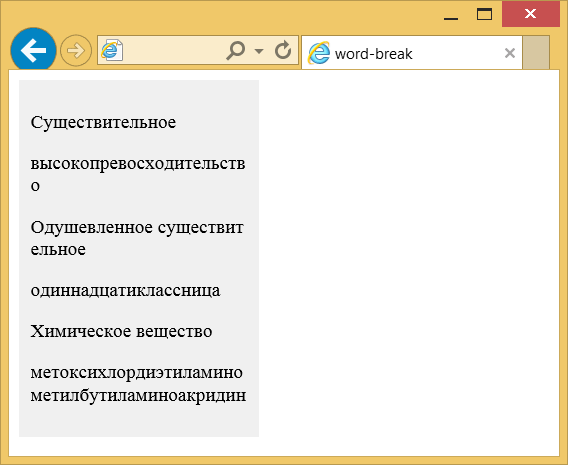

word-break
Свойство word-break указывает, как делать перенос строк внутри слов, которые не помещаются по ширине в заданную область.
Краткая информация
| Значение по умолчанию | normal |
|---|---|
| Наследуется | Да |
| Применяется | Ко всем элементам |
Синтаксис
word-break: normal | break-all | keep-allЗначения
- normal
- Используются правила переноса строк по умолчанию. Как правило, в этом случае строки не переносятся или переносятся в тех местах, где явно задан перенос (например, с помощью <br>).
- break-all
- Перенос строк добавляется автоматически, чтобы слово поместилось в заданную ширину блока. Значение не работает для текста на китайском, корейском или японском языке.
- keep-all
- Не разрешает перенос строк в словах на китайском, корейском или японском языке. Для остальных языков действует как normal.
Пример
<!DOCTYPE html>
<html>
<head>
<meta charset="utf-8">
<title>word-break</title>
<style>
.col {
background: #f0f0f0; /* Цвет фона */
width: 180px; /* Ширина блока */
padding: 10px; /* Поля */
word-break: break-all; /* Перенос слов */
}
</style>
</head>
<body>
<div class="col">
<p>Cуществительное</p>
<p>высокопревосходительство</p>
<p>Одушевленное существительное</p>
<p>одиннадцатиклассница</p>
<p>Химическое вещество</p>
<p>метоксихлордиэтиламинометилбутиламиноакридин</p>
</div>
</body>
</html>Результат данного примера показан на рис. 1.

Рис. 1. Перенос длинных слов
Объектная модель
Объект.style.wordBreak
Спецификация
| Спецификация | Статус |
|---|---|
| CSS Text Level 3 | Рабочий проект |
Браузеры
| Internet Explorer | Chrome | Opera | Safari | Firefox |
| 5.5 | 1 | 3.1 | 15 |
| Android | Firefox Mobile | Opera Mobile | Safari Mobile |
| 1 | 15 | 4 |